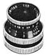
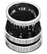
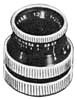
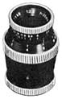
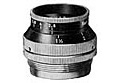
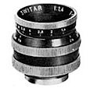
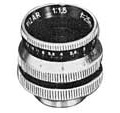
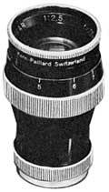

The story of Kern began in 1819, when Jakob Kern opened a workshop in Aarau, Switzerland, for the production of mathematical, levelling and field measuring instruments. In 1885, the firm was named Kern & Company. Under the direction of Heinrich Kern, the grandson of Jakob Kern, the company continued to manufacture an increasing range of surveying instruments.
The optical and lens departments of Kern & Co. AG opened in 1914. The heavy demand for fine optics brought on by the first World War led to the construction of new factory buildings. From these shops came the Kern anastigmat lens with a speed of f/6.3 and f/4.5.
The Kern plant was enlarged again in 1943 to fill orders from all over the world. In collaboration with the Paillard-Bolex plant, Kern-Paillard began the manufacture of motion picture lenses. In 1944, Kern lenses were the first motion picture lenses manufactured with an anti-reflective coating, as well as the first to include an automatic depth of field scale. The iris diaphragm featured accurate click stops, while the diaphragm blades provided a wider spacing at small apertures.
Research and improvements in optical engineering required from the demands of World War II resulted in the line of Kern Switar and Yvar lenses. The association with Paillard allowed a line of quality lenses to be supplied for Bolex cameras following the war. Listed below are the Kern-Paillard lenses that were introduced during the 1940s.
D Mount Lenses for 8mm Cameras

Switar 12.5 f/1.5A standard focal length lens in normal D-mount with an engraved depth of field scale.

Yvar 12.5mm f/2.8 (DESIGNED FOR L-8)This lens was intended for use on L-8 cameras. It was available in both fixed focus and focus mount versions; the fixed focus lens is pictured here. Although the thread diameter is identical to a normal D-mount lens (15.8mm or 5/8"), the optical distance from film plane to lens seat is 7.8mm (0.3075").

Yvar 25mm f/2.5A moderate telephoto lens. It had no DOF scale; focus range was 1 1/2 feet to infinity.

Yvar 36mm f/2.8A telephoto lens with no depth of field scale; focus range from 2' to infinity.
C Mount Lenses for 16mm Cameras

Yvar 15mm f/2.8A moderately wide angle lens.

Switar 25mm f/1.4A fast standard focal length lens. Production of this lens seems to have continued into the 1950s, even with the introduction of the Visifocus lenses. The Switar 25mm F/1.4 had a standard depth of field scale.

Pizar 25mm f/1.5Introduced in the late '40s as a less expensive standard focal length lens, compared to the Switar 25mm f/1.4. This lens had no depth of field scale.

Yvar 75mm f/2.5A telephoto lens with micrometer click-stops. It does not appear to have been manufactured after the introduction of Visifocus lenses in 1950; specifically, the YVORA 75mm f/2.8.